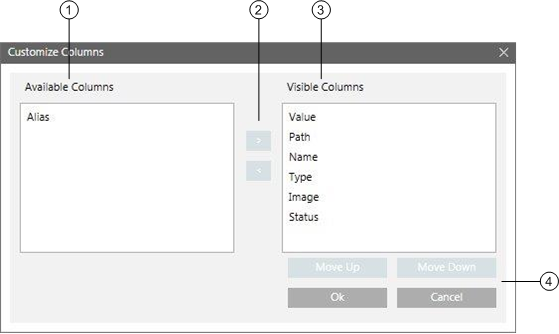

Customize Columns Dialog Box

| Name | Description |
1 | Available Columns | Displays a list of columns not currently shown in Textual Viewer. |
2 | Movement arrows | Allow you to move columns to control whether they are hidden or shown. |
3 | Visible Columns | Displays a list of columns that will show in Textual Viewer. |
4 | Selection buttons | Move Up/Move Down: Allow you to rearrange the order in which columns display. OK: Allows you to accept the changes you have made. Cancel: Allows you to cancel changes you have made. |